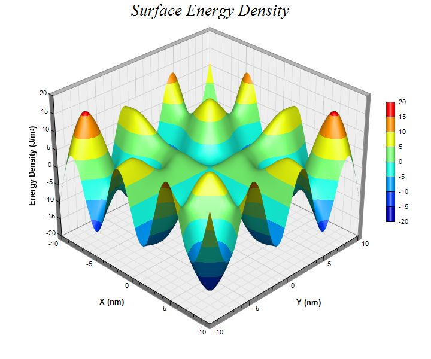

This example demonstrates the basic steps in creating surface charts.
The following is the command line version of the code in "cppdemo/surface". The MFC version of the code is in "mfcdemo/mfcdemo". The Qt Widgets version of the code is in "qtdemo/qtdemo". The QML/Qt Quick version of the code is in "qmldemo/qmldemo".
#include "chartdir.h"
#include <math.h>
int main(int argc, char *argv[])
{
// The x and y coordinates of the grid
double dataX[] = {-10, -9, -8, -7, -6, -5, -4, -3, -2, -1, 0, 1, 2, 3, 4, 5, 6, 7, 8, 9, 10};
const int dataX_size = (int)(sizeof(dataX)/sizeof(*dataX));
double dataY[] = {-10, -9, -8, -7, -6, -5, -4, -3, -2, -1, 0, 1, 2, 3, 4, 5, 6, 7, 8, 9, 10};
const int dataY_size = (int)(sizeof(dataY)/sizeof(*dataY));
// The values at the grid points. In this example, we will compute the values using the formula
// z = x * sin(y) + y * sin(x).
const int dataZ_size = dataX_size * dataY_size;
double dataZ[dataZ_size];
for(int yIndex = 0; yIndex < dataY_size; ++yIndex) {
double y = dataY[yIndex];
for(int xIndex = 0; xIndex < dataX_size; ++xIndex) {
double x = dataX[xIndex];
dataZ[yIndex * dataX_size + xIndex] = x * sin(y) + y * sin(x);
}
}
// Create a SurfaceChart object of size 720 x 600 pixels
SurfaceChart* c = new SurfaceChart(720, 600);
// Add a title to the chart using 20 points Times New Roman Italic font
c->addTitle("Surface Energy Density ", "Times New Roman Italic", 20);
// Set the center of the plot region at (350, 280), and set width x depth x height to 360 x 360
// x 270 pixels
c->setPlotRegion(350, 280, 360, 360, 270);
// Set the data to use to plot the chart
c->setData(DoubleArray(dataX, dataX_size), DoubleArray(dataY, dataY_size), DoubleArray(dataZ,
dataZ_size));
// Spline interpolate data to a 80 x 80 grid for a smooth surface
c->setInterpolation(80, 80);
// Add a color axis (the legend) in which the left center is anchored at (645, 270). Set the
// length to 200 pixels and the labels on the right side.
c->setColorAxis(645, 270, Chart::Left, 200, Chart::Right);
// Set the x, y and z axis titles using 10 points Arial Bold font
c->xAxis()->setTitle("X (nm)", "Arial Bold", 10);
c->yAxis()->setTitle("Y (nm)", "Arial Bold", 10);
c->zAxis()->setTitle("Energy Density (J/m<*font,super*>2<*/font*>)", "Arial Bold", 10);
// Output the chart
c->makeChart("surface.jpg");
//free up resources
delete c;
return 0;
}
© 2023 Advanced Software Engineering Limited. All rights reserved.